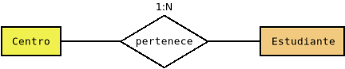

4.6. Programación con conectores#
Como se ha podido ver hasta aquí, el acceso de una aplicación a una base de datos relacional es relativamente sencillo y medianamente semejante sea cual sea el lenguaje de programación y el SGBD. Por tanto, el usar de modo básico conectores no entraña excesiva dificultad. Lo complicado, en realidad, es abstraer al resto del programa del acceso, de modo que logremos que manipule puramente objetos, aunque la información no esté almacenada según este modelo en la base de datos.
Para lograr esta abstracción proponemos un patrón DAO, que separa por un lado los objetos del modelo de datos de nuestra aplicación y por otro los objetos que se encargan del acceso a la base de datos. Ilustrémoslo con un ejemplo muy sencillo: un conjunto de estudiantes que cursan estudios en centros de enseñanza:
que podemos codificar de este modo:
package edu.acceso.ejemplo_conn.modelo;
import edu.acceso.sqlutils.Entity;
/**
* Modela un centro de enseñanza.
*/
public class Centro implements Entity {
/**
* Código identificativo del centro.
*/
private int id;
/**
* Nombre del centro.
*/
private String nombre;
/**
* Titularidad: pública o privada.
*/
private String titularidad;
public Centro() {
super();
}
/**
* Carga todos los datos en el objeto.
* @param id Código del centro.
* @param nombre Nombre del centro.
* @param titularidad Titularidad del centro.
* @return El propio objeto.
*/
public Centro cargarDatos(int id, String nombre, String titularidad) {
setId(id);
setNombre(nombre);
setTitularidad(titularidad);
return this;
}
/**
* Constructor que admite todos los datos de definición del centro.
* @param id Código del centro.
* @param nombre Nombre del centro.
* @param titularidad Titularidad del centro (pública o privada)
*/
public Centro(int id, String nombre, String titularidad) {
cargarDatos(id, nombre, titularidad);
}
public int getId() {
return id;
}
public void setId(int id) {
this.id = id;
}
public String getNombre() {
return nombre;
}
public void setNombre(String nombre) {
this.nombre = nombre;
}
public String getTitularidad() {
return titularidad;
}
public void setTitularidad(String titularidad) {
this.titularidad = titularidad;
}
@Override
public String toString() {
return String.format("%s (%s)", getNombre(), getId());
}
}
package edu.acceso.ejemplo_conn.modelo;
import java.time.LocalDate;
import java.time.temporal.ChronoUnit;
import edu.acceso.sqlutils.Entity;
import edu.acceso.sqlutils.annotations.Fk;
/**
* MOdela un estudiante.
*/
public class Estudiante implements Entity {
/**
* Identificador del estudiante.
*/
private int id;
/**
* Nombre completo del estudiante.
*/
private String nombre;
/**
* Fecha de nacimiento del estudiante.
*/
private LocalDate nacimiento;
/**
* Centro al que está adscrito.
*/
@Fk
private Centro centro;
public Estudiante() {
super();
}
/**
* Carga los datos del estudiante.
* @param id El identificador del estudiante.
* @param nombre El nombre del estudiante.
* @param nacimiento La fecha de nacimiento.
* @param centro El centro al que está adscrito.
* @return El propio objeto.
*/
public Estudiante cargarDatos(int id, String nombre, LocalDate nacimiento, Centro centro) {
setId(id);
setNombre(nombre);
setNacimiento(nacimiento);
setCentro(centro);
return this;
}
/**
* Constructor que carga todos los datos.
* @param id El identificador del estudiante.
* @param nombre El nombre del estudiante.
* @param nacimiento La fecha de nacimiento.
* @param centro El centro al que está adscrito.
* @return El propio objeto.
*/
public Estudiante(int id, String nombre, LocalDate nacimiento, Centro centro) {
this.cargarDatos(id, nombre, nacimiento, centro);
}
public int getId() {
return id;
}
public void setId(int id) {
this.id = id;
}
public String getNombre() {
return nombre;
}
public void setNombre(String nombre) {
this.nombre = nombre;
}
public LocalDate getNacimiento() {
return nacimiento;
}
public void setNacimiento(LocalDate nacimiento) {
this.nacimiento = nacimiento;
}
public Centro getCentro() {
return centro;
}
public void setCentro(Centro centro) {
this.centro = centro;
}
@Override
public String toString() {
LocalDate hoy = LocalDate.now();
return String.format("%s (%d años)", getNombre(), ChronoUnit.YEARS.between(getNacimiento(), hoy));
}
}
Ver también
Puede encontrar el código completo del ejemplo ilustrativo en este repositorio de GitHub.
Como puede observarse, las dos definiciones son independientes del soporte de
almacenamiento y responden únicamente a la lógica de la aplicación[1]. Para
simplicar las cosas obligamos a que todas estas clases incluyan un campo
identificador, de ahí que implementen una interfaz Entity:
public interface Entity {
public int getId();
public void setId(int id);
}
Si estas clases son ajenas a su persistencia, ¿cómo entonces se escribe o recupera información de la base de datos? Esto es así, porque definiremos otras clases, una por cada una de las clases del modelo, dedicadas a ello. Por tanto, deberemos crear una para almacenar y recuperar centros y, otra para almacenar y recuperar estudiantes.
En principio, para todos los objetos hay que implementar las mismas operaciones de almacenamiento: inserción, recuperación, borrado y almacenamiento; así que podemos definir una interfaz que cumplan todas estas clases relacionadas con el almacenamiento en el backend:
package edu.acceso.sqlutils;
import java.util.Optional;
import java.util.stream.Stream;
public interface Crud<T extends Entity> {
public Optional<T> get(int id) throws DataAccessException;
public Stream<T> get() throws DataAccessException;
public boolean delete(int id) throws DataAccessException;
default boolean delete(T obj) throws DataAccessException {
return delete(obj.getId());
}
public void insert(T obj) throws DataAccessException;
default void insert(Iterable<T> objs) throws DataAccessException {
for(T obj: objs) insert(obj);
}
public boolean update(T obj) throws DataAccessException;
public boolean update(int oldId, int newId) throws DataAccessException;
default boolean update(T obj, int newId) throws DataAccessException {
return update(obj.getId(), newId);
}
}
Nota
La interfaz está definida en sqlutils, no en el ejemplo ilustrativo.
Aclaración
Esta interfaz no tiene por qué ser definida exactamente así, pero básicamente implementa todas esas operaciones.
Son precisas algunas aclaraciones:
La interfaz es genérica, porque una clase orientada a almacenar estudiantes deberá recuperar estudiantes o admitir un estudiante cuando desea añadir datos a la base de datos, mientras que si está orientada a centros, deberá hacer lo propio con centros.
El método de inserción de varios objetos puede resultar redundante y, de hecho, se facilita una implementación predeterminada que consiste en insertar sucesivamente todos. Pero es útil porque da pie a que podamos implementar algo más eficiente, si así lo estimamos oportuno.
Hemos preferido que la obtención de todos los objetos de una misma clase se haga mediante un flujo para lo cual podemos usar el método
SqlUtils.resultToStreamde sqlutils. Por supuesto es posible también alterar la firma del método para devolver java.util.List.[2].OPTIONAL: Comentar
Esta, pues, es la interfaz que cumpliran todas las clases encargadas de
comunicarse con la base de datos para extraer o guardar datos. Implementemos
ahora la clase para extraer o guardar objetos Centro:
package edu.acceso.ejemplo_conn.modelo;
import edu.acceso.sqlutils.Entity;
/**
* Modela un centro de enseñanza.
*/
public class Centro implements Entity {
/**
* Código identificativo del centro.
*/
private int id;
/**
* Nombre del centro.
*/
private String nombre;
/**
* Titularidad: pública o privada.
*/
private String titularidad;
public Centro() {
super();
}
/**
* Carga todos los datos en el objeto.
* @param id Código del centro.
* @param nombre Nombre del centro.
* @param titularidad Titularidad del centro.
* @return El propio objeto.
*/
public Centro cargarDatos(int id, String nombre, String titularidad) {
setId(id);
setNombre(nombre);
setTitularidad(titularidad);
return this;
}
/**
* Constructor que admite todos los datos de definición del centro.
* @param id Código del centro.
* @param nombre Nombre del centro.
* @param titularidad Titularidad del centro (pública o privada)
*/
public Centro(int id, String nombre, String titularidad) {
cargarDatos(id, nombre, titularidad);
}
public int getId() {
return id;
}
public void setId(int id) {
this.id = id;
}
public String getNombre() {
return nombre;
}
public void setNombre(String nombre) {
this.nombre = nombre;
}
public String getTitularidad() {
return titularidad;
}
public void setTitularidad(String titularidad) {
this.titularidad = titularidad;
}
@Override
public String toString() {
return String.format("%s (%s)", getNombre(), getId());
}
}
Este objeto CentroSqlite recibe al ser construido la fuente de datos (el
java.sql.DataSource. ds) y al realizar una operación, establece una conexión y
construye sobre ella la sentencia. Esta pensada para que se haya creado en otra
parte (una clase que mostraremos luego) un pool de conexiones
a la base de datos en cuestión. Esa es la razón por la que alegremente nos
permitimos crear y cerrar objetos java.sql.Connection.
Como puede verse, la implementación de sus métodos consiste en poner en práctica
lo aprendido en apartados anteriores: abrimos una conexión, construimos ls
sentencia SQL. apropiada y la ejecutamos para realizar la operación. Tan sólo
tiene interés comentar el método que devuelve el Stream, ya que por sus
particularidades, ha obligado a obrar de modo distinto:
@Override
public Stream<Centro> get() throws DataAccessException {
final String sqlString = "SELECT * FROM Centro";
try {
Connection conn = ds.getConnection();
Statement stmt = conn.createStatement();
ResultSet rs = stmt.executeQuery(sqlString);
return SqlUtils.resultSetToStream(conn, rs, CentroSqlite::resultToCentro);
}
catch(SQLException err) {
throw new DataAccessException(err);
}
}
Obsérvese que en este método, a diferencia de los anteriores, no cerramos la
conexión, ni la sentencia, ni el resultado, ya que de lo contrario no podremos
obtener centros del Stream devuelto. Quien se encargará de cerrar finalmente
todo será el propio flujo cuando se cierre, por lo que convendrá usar con él un
try-with-resources. Además, el primer argumento que recibe
SqlUtils.resultToStream es la conexión, no la sentencia. Recordemos que el
objeto de este primer argumento se pasa, no porque sea útil para construir el
flujo, sino con la intención de poder cerrarlo cuando se cierre el flujo. Como
en este caso abrimos una conexión exclusivamente para llevar a cabo esta
operación, debemos cerrar la conexión, no simplemente el objeto java.sql.Statement.
Necesitamos también crear una clase para la persistencia de los objetos
Estudiante. La clase EstudianteSqlite es semejante a la anterior, pero
hay una gran diferencia: uno de los atributos de Estudiante es un centro, lo
que supone que en la base de datos el campo es una clave foránea (un entero) que
hace referencia al registro de otra tabla. El problema de esta circunstancia se
produce cuando deseemos generar un objeto Estudiante a partir de una
operación de lectura (.get en nuestra interfaz), ya que la consulta nos
devolverá el identificador del centro, no el centro en sí. Para abordar esta
dificultad tenemos dos vías:
Obtener automáticamente también el centro asociado al obtener el estudiante.
No hacerlo y posponer su obtención hasta que sea realmente necesario: cuando en la aplicación se ejecute el método
.getCentro().
La primera vía es sencilla, aunque menos eficiente: si nunca llegamos a usar el
centro, habremos hecho una segunda consulta[3] inútil. La segunda vía es
perezosa, pero tiene el inconveniente de que es muy difícil de implementar, ya
que pasa por crear un objeto proxy que almacene inicialmente el identificador
del centro e intercepte las llamadas al método .getCentro() para que haga la
consulta con dicho identificador. En cualquier caso, tal implementación está
hecha en sqlutils y exige únicamente que se marque con una anotación el campo
como clave foránea (con @Fk). Veamos cómo usar esta implementación:
private static Estudiante resultToEstudiante(ResultSet rs, DataSource ds) throws SQLException {
int id = rs.getInt("id_estudiante");
String nombre = rs.getString("nombre");
Integer idCentro = rs.getInt("centro");
if(rs.wasNull()) idCentro = null;
LocalDate nacimiento = rs.getDate("nacimiento").toLocalDate();
Estudiante estudiante = new Estudiante();
Centro centro = null;
// Carga inmediata: obtenemos inmediatamente el centro.
//if(IdCentro != null) centro = new CentroSqlite(ds).get(IdCentro).orElse(null);
// Carga perezosa: proxy al que se le carga la clave foránea
FkLazyLoader<Estudiante> loader = new FkLazyLoader<>(estudiante);
loader.setFk("centro", idCentro, new CentroSqlite(ds));
estudiante = loader.createProxy();
// Cargamos datos en el objeto y entregamos.
return estudiante.cargarDatos(id, nombre, nacimiento, centro);
}
Con lo hecho hasta ahora, tenemos definidas las clases del modelo y las clases que permiten hacer persistentes los objetos de dichas clases (DAO). Necesitamos también una clase para la conexión a la base de datos que se encargue de:
Crear el pool de conexiones con el java.sql.DataSource. apropiado.
Realizar labores de inicialización. Por ejemplo, si la base de datos está vacía que la pueble con el esquema.
Que proporcione al resto de la aplicación los dos objetos DAO asociados a la persistencia de centros y estudiante.
Por tanto, esta clase para la conexión, sea cual sea el SGBD, tendrá que cumplir esta interfaz:
package edu.acceso.ejemplo_conn.backend;
import edu.acceso.ejemplo_conn.modelo.Centro;
import edu.acceso.ejemplo_conn.modelo.Estudiante;
import edu.acceso.sqlutils.Crud;
public interface Conexion {
public Crud<Centro> getCentroDao();
public Crud<Estudiante> getEstudianteDao();
}
Y la clase en sí tendrá esta implementación:
package edu.acceso.ejemplo_conn.backend.sqlite;
import java.io.IOException;
import java.io.InputStream;
import java.nio.file.Files;
import java.nio.file.Path;
import java.sql.SQLException;
import java.util.Map;
import java.util.stream.Stream;
import com.zaxxer.hikari.HikariConfig;
import com.zaxxer.hikari.HikariDataSource;
import edu.acceso.ejemplo_conn.backend.Conexion;
import edu.acceso.ejemplo_conn.modelo.Centro;
import edu.acceso.ejemplo_conn.modelo.Estudiante;
import edu.acceso.sqlutils.Crud;
import edu.acceso.sqlutils.DataAccessException;
import edu.acceso.sqlutils.SqlUtils;
/**
* Modela la conexión a una base de dato SQLite
*/
public class ConexionSqlite implements Conexion {
final static Path esquema = Path.of(System.getProperty("user.dir"), "src", "main", "resources", "esquema.sql");
final static String protocol = "jdbc:sqlite:";
final static short maxConn = 10;
final static short minConn = 1;
private final HikariDataSource ds;
/**
* Constructor de la conexión.
* TODO: Modificar el constructor para aplicar a la clase una especie de patrón Singleton:
* Si la url+username+password coincide con una que ya se haya utilizado, no se crea un objeto
* distinto, sino que se devuelve el objeto que se creó anteriormente.
* @param opciones Las opciones de conexión.
*/
public ConexionSqlite(Map<String, Object> opciones) {
String path = (String) opciones.get("url");
if(path == null) throw new IllegalArgumentException("No se ha fijado la url de la base de datos");
String dbUrl = String.format("%s%s", protocol, path);
Short maxConn = (Short) opciones.getOrDefault("maxconn", ConexionSqlite.maxConn);
Short minConn = (Short) opciones.getOrDefault("minconn", ConexionSqlite.minConn);
HikariConfig hconfig = new HikariConfig();
hconfig.setJdbcUrl(dbUrl);
hconfig.setMaximumPoolSize(maxConn);
hconfig.setMinimumIdle(minConn);
ds = new HikariDataSource(hconfig);
initDB();
}
@Override
public Crud<Centro> getCentroDao() {
return new CentroSqlite(ds);
}
@Override
public Crud<Estudiante> getEstudianteDao() {
return new EstudianteSqlite(ds);
}
private void initDB() {
try (Stream<Centro> centros = getCentroDao().get()) {
centros.close();
}
// Si no podemos obtener la lista de los centros disponibles.
// es porque aún no existe la base de datos.
catch(DataAccessException err) {
try (InputStream st = Files.newInputStream(esquema)) {
SqlUtils.executeSQL(ds.getConnection(), st);
}
catch(SQLException e) {
throw new DataAccessException("No puede crearse el esquema de la base de datos", e);
}
catch(IOException e) {
throw new DataAccessException(String.format("No puede acceder al esquema: %s", esquema));
}
}
}
}
Como nuestra aplicación puede manejar varios SGBD distintos, tendremos que realizar implementaciones análogas para todos ellos e implementar un patrón Factory que escoja el tipo adecuado de conexión.
Hecho eso, relacionarnos con la base de datos está totalmente encapsulado:
DateTimeFormatter formato = DateTimeFormatter.ofPattern("dd/MM/yyyy");
// Estas opciones tendrán que obtenerse de algún modo.
Map<String, Object> opciones = Map.of(
"base", "sqlite",
"url", "file::memory:?cache=shared",
"user", "",
"password", ""
);
// Aplicamos el patrón factory para elegir la conexión adecuada.
Conexion conexion = BackendFactory.crearConexion(opciones);
// Objetos para gestionar la persistencia de centros y estudiantes.
Crud<Centro> centroDao = conexion.getCentroDao();
Crud<Estudiante> estudianteDao = conexion.getEstudianteDao();
Centro astaroth = new Centro(11701164, "IES Astaroth", "pública");
centroDao.insert(astaroth); // Hacemos persistente el centro.
Estudiante estudiante = new Estudiante(1, "Perico de los palotes", LocalDate.parse("10/12/2010", formato), astaroth),
estudianteDao.insert(estudiante); // Hacemos persistente el estudiante.
// Nos olvidamos de ambos objetos.
centro = null;
estudiante = null;
estudiante = estudiante.get(1).orElse(null); // Perico.
astaroth = estudiante.getCentro(); // Astaroth.
// Debemos asegurarmos de cerrar el Stream
// para no dejar abierto el objeto Connection asociado.
try(Stream<centro> centros = centroDao.get()) {
centros.forEach(System.out::println);
}
// Borramos el centro.
centroDao.delete(astaroth);
centroDao.get(11701164) == Optional.empty(); // true
Notas al pie